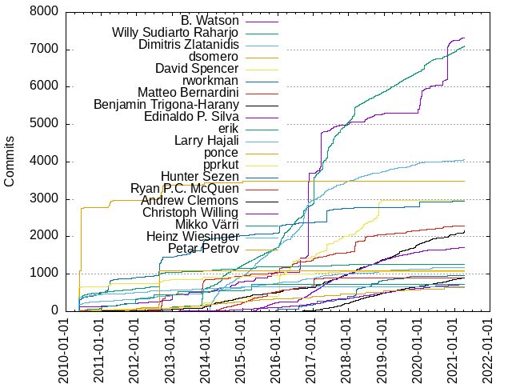

Authors
| Author | Commits (%) | + lines | - lines | First commit | Last commit | Age | Active days | # by commits |
|---|
| Willy Sudiarto Raharjo | 5877 (9.69%) | 93590 | 83132 | 2010-06-18 | 2018-12-29 | 3116 days, 1:48:20 | 1274 | 1 |
| B. Watson | 5294 (8.73%) | 169889 | 39044 | 2010-03-04 | 2018-12-27 | 3220 days, 6:50:19 | 598 | 2 |
| Dimitris Zlatanidis | 3744 (6.17%) | 93793 | 22071 | 2014-01-03 | 2018-12-28 | 1819 days, 6:04:19 | 924 | 3 |
| dsomero | 3485 (5.75%) | 81961 | 110184 | 2010-04-25 | 2015-01-16 | 1726 days, 10:13:52 | 129 | 4 |
| David Spencer | 2965 (4.89%) | 58292 | 31635 | 2010-05-12 | 2018-11-30 | 3124 days, 18:28:27 | 485 | 5 |
| rworkman | 2786 (4.59%) | 288406 | 199386 | 2010-02-23 | 2018-12-07 | 3209 days, 0:44:14 | 545 | 6 |
| Matteo Bernardini | 2057 (3.39%) | 134573 | 29678 | 2010-05-29 | 2018-12-18 | 3125 days, 0:59:43 | 514 | 7 |
| Benjamin Trigona-Harany | 1395 (2.30%) | 29931 | 9290 | 2010-06-24 | 2018-12-27 | 3108 days, 10:00:00 | 668 | 8 |
| Edinaldo P. Silva | 1370 (2.26%) | 45552 | 10252 | 2015-04-17 | 2018-12-22 | 1345 days, 7:36:49 | 393 | 9 |
| erik | 1258 (2.07%) | 43206 | 15954 | 2010-03-04 | 2018-10-23 | 3155 days, 5:00:44 | 333 | 10 |
| Larry Hajali | 1096 (1.81%) | 48732 | 14990 | 2010-03-04 | 2018-12-12 | 3204 days, 22:51:19 | 524 | 11 |
| ponce | 1083 (1.79%) | 14952 | 6385 | 2010-09-21 | 2012-08-28 | 707 days, 10:26:39 | 83 | 12 |
| pprkut | 1070 (1.76%) | 30944 | 104010 | 2010-05-11 | 2018-03-18 | 2867 days, 8:43:53 | 99 | 13 |
| Ryan P.C. McQuen | 909 (1.50%) | 12858 | 6262 | 2014-01-03 | 2017-04-13 | 1195 days, 10:27:02 | 312 | 14 |
| Hunter Sezen | 834 (1.38%) | 32643 | 7519 | 2015-07-07 | 2018-12-29 | 1270 days, 12:28:34 | 202 | 15 |
| Mikko Värri | 723 (1.19%) | 26491 | 5720 | 2010-07-17 | 2015-03-29 | 1716 days, 20:50:05 | 62 | 16 |
| Heinz Wiesinger | 665 (1.10%) | 41338 | 12182 | 2010-03-04 | 2017-01-31 | 2525 days, 3:35:53 | 110 | 17 |
| Petar Petrov | 550 (0.91%) | 46344 | 9425 | 2011-08-17 | 2018-12-27 | 2688 days, 15:33:02 | 111 | 18 |
| Nishant Limbachia | 541 (0.89%) | 21035 | 6595 | 2010-03-04 | 2018-11-10 | 3172 days, 21:34:53 | 221 | 19 |
| Christoph Willing | 498 (0.82%) | 14804 | 6505 | 2011-03-05 | 2018-12-16 | 2842 days, 4:24:51 | 321 | 20 |
These didn't make it to the top: Robby Workman, Andrew Clemons, Marcel Saegebarth, Niels Horn, Mario Preksavec, Kyle Guinn, Audrius Ka≈æukauskas, David Woodfall, Andre Barboza, LukenShiro, Dugan Chen, michiel, Chris Novakovic, Zachary Storer, M.Dinslage, ArTourter, Aleksandar Samardzic, Vincent Batts, Binh Nguyen, David Somero, Edward W. Koenig, Barry J. Grundy, Alexander Verbovetsky, Markus Reichelt, Marco Bonetti, Brenton Earl, Andrzej Telszewski, LEVAI Daniel, Aaditya Bagga, Andreas Guldstrand, Donald Cooley, Panagiotis Nikolaou, Fridrich von Stauffenberg, Michales Michaloudes, Thibaut Notteboom, Andreas Voegele, Yth - Arnaud, Frank Caraballo, Eugen Wissner, R. S. Ananda Murthy, T3slider, Jostein Berntsen, Eugene Wissner, Roberto Neri, Pierre Cazenave, Martin Lefebvre, Glenn Becker, Grigorios Bouzakis, Antonio Hern√°ndez Blas, crocket, Eugene M, Menno Duursma, Christopher Walker, DhabyX, Chess Griffin, Michael Wagner, Johannes Schoepfer, Cezary M. Kruk, Zhu Qun-Ying, Jeremy Hansen, JK Wood, khronosschoty, Fernando Lopez Jr, Chris Abela, Zbigniew Baniewski, Phillip Warner, Thomas Morper, Philip Lacroix, slakmagik, Markus Rinne, Kent Fritz, David Melik, Tim Dickson, Luis Henrique, Edward Koenig, Sebastien BALLET, Leonard Schmidt, Philip van der Hoeven, titopoquito, Michal Bialozor, Daniil Bratashov, mario, Nikos Giotis, Menno E. Duursma, Paul Wisehart, Ozan T√ºrkyƒ±lmaz, Iskar Enev, Gethyn ThomasQuail, Pablo Santamaria, powtrix, Serban Udrea, David Sullins, Murat D. Kadirov, David O'Shaughnessy, Daniel LEVAI, Cristiano Urban, Klaatu, Grissiom, Erik Falor, Andrew Brouwers, Mikko Varri, Heiko Rosemann, Alan Alberghini, hollywoodb, Giuseppe Di Terlizzi, melikamp, Niklas Nille √Ökerstr√∂m, Andrew Strong, larryhaja, klaatu, Roberto Metere, Giorgio Peron, vvoody, Fellype do Nascimento, Lionel Young, Giovanne Castro, Gerardo Zamudio, Christophe Trussardi, Skaendo, Daniel de Kok, Miguel De Anda, Erwin van Zanten, pyllyukko, Dominik Drobek, Azure Zanculmarktum, dslackw, markus reichelt, Nikolay Korotkiy, Andrey Maraev, Yalla-One, Ruben Schuller, Stu Miller, Richard Narron, Mauro Giachero, R.S.Ananda Murthy, Markus Hutmacher, Jorge Giner, Bill Kirkpatrick, core, Richard Ellis, Matthew Fillpot, Leo C, V'yacheslav Stetskevych, Peter Wang, Diogo Leal, Chris Walker, Adis Nezirovic, John Vogel, Gilcio Amaral, Duncan Roe, Alan Aversa, Thomas Szteliga, Didier Spaier, Andy Bailey, Amit Ugol, alkos333, Jan F. Chadima, Michael Johnson, Felix Pfeifer, Euan Thoms, Ebben Aries, Dave Woodfall, Dario Nicodemi, Daniel Stolarski, Daniel Prosser, Carlos Corbacho, skaendo, nomnombtc, S√©bastien Ballet, Nate Bargmann, Ekin Akoglu, pomfland, Timothy Pollard, Rodrigo Gimenez, Marco Cecchetti, Marcin Szychowski, Chris Farrell, Bojan Popovic, Andrew Tkalia, Alan Hicks, Pedro Mendes, Kevin Paulus, James Geboski, Ferenc Deak, Dhaby Xiloj, Vasilis Papavasileiou, Rob van Nues, Oleg O. Chukaev, Jick Nan, Jason Graham, stormtracknole, otzy_007, Steven Pledger, Sean Donner, Niki Kovacs, MagicMan, Isaac Yu, Vliegendehuiskat, Tracy Williams, Thorn Inurcide, Strahil Yordanov, Marcin Herda, Eugene Suter, B Watson, Zordrak, Yanes Checcacci Balod, Wainamoinen, Talos Thoren, Steven King, Sebasti√°n Salazar Molina, Ricardo J. Barberis, Lenard Spencer, GPLeo, Arthur W. Green, Arkadiusz Drabczyk, Andrew Psaltis, Andrew Lobanov, Alexander Bruy, Ronny Schmatzler, Rodney Cobb, Mohammad Etemaddar, Alex Lysenka, rfmae, Wayne Cuddy, Sebastian Arcus, Marek Srejma, Guillermo Bonvehi, grissiom, Ricardson Williams, Reedych, Kevin Matthew, Josiah Boothby, Jens Weber, CCHsu, fuzzix, Ryan S. Northrup, Nikolay Nikolov, Marek Wodzinski, Jockey S. Kyd, Charles E. Kauffman, Asaf Ohaion, Antonio Leal, Andrew Rowland, wru, fdeak, Robert Allen, Petr Kletecka, Michiel van Wessem, Harald Achitz, Elvio Basello (HelLViS69), Dmitrii Sosedov, Andy Goth, Andre Fernando, –°–∏–º–æ–Ω –ë–æ–ª–æ–∫–∞–Ω–æ–≤, ≈†ime Ramov, nobody, Muhammad Herdiansyah, Michael Heras, Marek Buras, Manuel Arg√ºelles, Jo√£o Felipe Santos, Joel J. Adamson, Brian Muramatsu, Ben Mendis, –°. –°. –ë–æ–ª–æ–∫–∞–Ω–æ–≤—ä, eroc, byteframe, adev, Tom Canich, Stylianos Tsampas, NK, K.D.Hedger, Brian Reichert, Andy Alt, Alan_Hicks, wigums, aaditya, Vladimir MyRequiem, Morten Juhl-Johansen Z√∂lde-Fej√©r, Mikhail Zotov, Luka Novsak, Lehman Black, Jonathan Larsen, Felipe Bugno, David Miller, Cherife Li, Bogdan Radulescu, Alex Word, firebird, Phil Warner, Kristaps Esterlins, Heiko Schlichting, Didier Charles, David Golus, Corrado Franco, Black Rider, Vitor Borrego, Oleg A. Deordiev, Mark Walling, Javier Rojas, Howard Pepper, Francisco Ambrozio, Bryan Harris, luoyi, Valeriy Timchenko, Peter Drauden, Nitish Ragoomundun, Nai, M√°rio Antunes, Martin Rogge, Lu√≠s Henrique, Joey Trungale, Gwenhael Le Moine, Guilherme Calandrini, Evandro Alves Rodrigues, Dave Margell, Dan-Simon Myrland, Christopher Forrest, Christophe Nguyen, Branko Grubic, Andrea Maccis, Tim Dickson (timsoft), Shrivatsan Sampathkumar, Scott Parker, Sasongko Bawono, Ruan K. F, Ole-Andr√© Rodlie, Michael Filz, Melvin Mawhin, Martin Ivanov, Leo Midha, Keith Richie, Jasper Klein, Gustavo Conrad, Eric Fernandes Ferreira, Eric B. Pratt, Emmanuel N. Mill√°n, Emmanuel N. Millan, Du≈°an Stefanoviƒá, Brian Kysela, Arun Mascarenhas, zux, chinarulezzz, Ulrich Schaefer, Sergio Vicari, Sebastien Ballet, Ruari Oedegaard, Michael Bueker, King Beowulf, Ken Roberts, Juan Valencia Escalante, Jonathan Li, John Tyree, Jim Capozzoli, Jefferson Rocha, Guan-Zhong Huang, Dave MacCormack, Brad Hermanson, AW Green, simotrone, majk, kchan, davidwoodfall, chopp, awg, Zach Lewis, Xavier Maillard, Vladimir Yatsemirski, Tom Fitzhenry, Thorsten, Thales A. Tsailas, Stefan Bidigaray, Stansoft, Shrivatsan V Sampathkumar, Sergei Fedosoff, S. Randall Sawyer, Ponce, Pedro R.M. J√∫nior, Owen Swerkstrom, Mike Heras, Mihai Militaru, Meckafett, Max Miorim, Mario Antunes, Marco Pessotto, Manuel Reimer, M Slodkiewicz, Lyle Sigurdson, Konrad J Hambrick, Jose Lopes, John Berger, Gabriel Magno, Edinaldo, David Matthew Jerry Koenig, David Fillpot, Bernski Comadizo, Bending Unit 647, Arun Prasannan, Adnan Hodzic, –°–∏–º–æ–Ω—ä –°. –ë–æ–ª–æ–∫–∞–Ω–æ–≤—ä, rob van nues, redtricycle, mancha, korgman, antonioleal, Yucatan Costa, Youjie Zhou, William PC, Trayan Denev, Steve Pledger, Rudson Alves, R S Ananda Murthy, Pragmatic Cypher, Petr Hejl, Olivier Esser, Niklas 'Nille' √Ökerstr√∂m, Nicky Chorley, Mathew Holleran, Mark Grocock, Marco Maggi, Manuel Mantilla, Luke Williams, Leigh Wedding, Kees Theunissen, Jakob Nylin, Jacob Pipkin, Giuseppe Scalzi, Gabriel Diniz Gisoldo, Fr√©d√©ric Galusik, Fernando Giannasi, Eric Schultz, Edinaldo P.Silva, Derek Noonburg, Daniel, Christopher Reimer, B. Jogai, Alan Ianson, tjohann, mid-kid, eviljames, Zoran Stojakovic, Zak B. Elep, Tomasz Konojacki, Thiago Coutinho, Steven Vch, Stephen Van Berg, Soydaner Ulker, Sergey Poznyakoff, Ryan Q, Rub√©n Llorente, Robert Goodall, Pierre-Philipp Braun, Nilton Moura, Nicolas Piatto, Mohamed LYAHYAOUI, Michael Edie, Martin Lefevbre, Mark Saiia, Lorenzo Trevisan, Kurt Erickson, Kuroi Kenshi, Kevin Scranton, Jo≈æe Zobec, Joe Rozner, Jim Diamond, Jheengut Pritvi, Jean-Yves Didier, Jan Herrygers, Henry Jensen, Hannes Worst, Gustavo Conrad - LU8WFY, Geoff Ritter, Gary Herreman, Eric Hameleers, Elvio Basello, Dylan Armitage, Dustin Schnee, Diego Pantano, Daniel Romero, Daniel R, Daniel Liljeqvist, Daniel Cash, Charles, CapEnt, Bruno Queiros, Ben Collver, B.Ton, Axel Bergerhoff, Ash Wiren, Asaf Ohayon, Andrew Conway, Alexander S√∂derlund, Adis Neziroviƒá, willysr, slacksam, slackmuz, sercari, nullboy, fossfun, digwtx, davjohn, ariarat, Wade Nelson, Robert Delahunt, Richard Scott Smith, Rex Hauser, Piotr Janaszek, Pedro Guimaraes, P.D. Parnoff, Ozan Turkyilmaz, Nobody, Nishant Limbahcia, Nicolas Kovacs, Navigium, Minime, Michael Kapelko, Michael Gabilondo, Marc-Andre Moreau, Manfred Mueller, Lu√≠s Fernando Carvalho Cavalheiro, Kuro_CODE25, Khronosschoty, Justin H Haynes, Jo√£o Medeiros, Jonathan Yu, John B, Jeanne-Kamikaze, Jack Maddox, Jack Hunt, JEREMY HOCDE, Ian D. Brunton, Henkjan Gersen, Guilherme Portalegre, Georgi Kolev, Fernando B Giannasi, Duane Dohrman II, Danny Schmarsel, Cj Case, Chernov V. V, Cheng Bao, CJ Johnson, Bruno T. Russo (BrunoRusso), Bruce Forte, Bogdan Pangrati, Armin Besirovic, Antonio Taverna, Andr√© Geraldo Vieira, Andres Fuentes, Allen Coleman, Ali Ahmadi, Alexandre Albuquerque Arnt, Alex Diaconu, /dev/rob0, x-ip, sero, seb, paul wisehart, mara, koolniczka, jamesaxl, gshep, gnubien, errordeveloper, bughunter2, adaptr, Young Chol Song, Yann M√©rignac, Winkel Manah, William Bowman, Vegard Haugland, Tushar Jagad, Tim Fitzhenry, Terry Laundos, Tarantino Antonino, Sukma Wardana, Steve Kennedy, Steffen Schwebel, Sergey Fedosoff, Ron F. DeMoss, Randall Sawyer, Piter PUNK, Nk, Nikos Yotis, Nikolas Nyby, Nick Warne, Mikhail Cuddy, Michael Pratt, Michael Gehring, Matthew Budd, Matt Kelly, Matt Hayes, Martin Rodriguez, Martin A. Ivanov, Marin Glibic, Marek Srejma (slacksam), Marcel Steinbeck, MLanden, Luciano Tropea, Kevin Myers, KaMii, J√°n Suƒçan, Juan Pablo Cordova E, Juan Camilo Nore√±a, Jorge Gajon, Jorge Barros de Abreu, Jeremy HOCDE, James Rich, James Powell, Ilya Ponetayev, Igor, Icaro Perseo, Greg' Ar Tourter, Germ√°n M√°rquez Mej√≠a, Georg Nagel, Geno Bob, G. Schoenmakers, Furry Monster, Florian Kanngiesser, Elvis Angelaccio, Diniz Bortolotto, Dejan Strbac, David Negroni, Bradley D. Thornton, Bogdan Tatarov, Ben, Beej Jorgensen, Arnaud Dupuis, Arik Miller, Andrew Lindberg, Andrew Antle, Andrea Villa, Althaf K Backer, Alex-P. Natsios, Alan Dingeldein, Alam Guntur Nugroho, Adam Lukomski, AbortRetryFail, Aaron W. Hsu, A. Green, xroberx, syncbq, spaceman, rexim, ppr:kut, notKlaatu, mightaswell, meckafett, mccnews, maldoror, m. budiman, ktabic, klatuu, jpipkin, javivf, hackedhead, grey, goarilla, drhouse, dhabyx, cteg, csokol, bkysela, William G Gardella, Tomas Matejicek, Thyr, Thomas_York, Thomas O. Robinson, Stu Reedy, Stephan Lucas, Stefano Guidoni, Stefan Beckert, Slax-Dude, Simone Giustetti, Shining, Serg Bormant, Sean Hinchee, Rudson R. Alves, Roman Revyakin, Roman Kodinets, Robert Zelic, Robert E. Lee, Renato Martini, Ralph Moritz, Peter Sarkoci, Per Dal√©n, Paul Liconti, Patrick Pippen, Pablo Oses, Pablo Hernan Saro, Omer YILMAZ, Ole Andre Rodlie, Oda, Nikos Skalkotos, Nicolas Steinmetz, NetrixTardis, Nelson Milum, Navigare, Mykyta Solomko, MrJackson, Mr. B-o-B, Moritz Wilhelmy, Miroslaw Turski, Michiel, Michalis Pappas, Michael Ren, Maykon Chagas, Mauricio Paicil, Mauricio Martinez, Matthew Kuzminski, Mats Bertil Tegner, Marshall Scott, Mark Noman, Mario St-Gelais, Marcel de Reus, Marc Dix, Manuel Fill, Manlio Modugno, Lorenzo Stramaccia, Korgman, Kai Schreyer, Jun SAITO, Judah Milgram, Juan M. Lasca, Joseph Schofield, Jose Maria Marin Carceles, Jorey Bump, Jordan Evans, Jonathan Chapman, Jon Ware, JokerBoy, John Clizbe, Joel Adamson, Joachim Kruth, Jim Bottino, Jeffrey T. Read, Jean-Luc Biord, Janis Eisaks, James Axl, Ismael Cort√©s, Ilya Etingof, Hubert Hesse, Henrique Grolli Bassotto, Hans Goossen, Graham Orange, Gerardo Zamduio, Georgy Shepelev, Georgios Efstathiou, George Vlahavas, GenoBob, Gene Baxter, Fred Richards, Frank Gingras, Francisco Dalla Rosa Soares, Floreal C, Fabio Sangiovanni, Evan Hisey, Egor Zayats, Eduardo Sanchez, Eduardo Oda, Dockland Porter, Davidson Francis, Daniel Jordan, Damien Durand, Conrado Ruch Jr, Ciorceri Petru Sorin, ChuangTzu, Chris Lawrence, Chernov, Bruno Vezzaro, Brice Lopez, Bob De Mars, Blase Stanek, Benno, Ben-Richard Ebbesvik, Arvydas Sidorenko, Ar Tourter, Anton Sil'uev, Antoine NONYME, Andrew Waters, Alexander Brovikov, AlexGAV, Alex Elliott, Adrian Ulrich, /dev/ammo42, –° —É–≤–∞–∂–µ–Ω–∏–µ–º, –ê.–ö–∞—Ä–∞–±–∞–Ω–æ–≤, –ö–∞—Ä–∞–±–∞–æ–≤ –ê–ª–µ–∫—Å–µ–π, –ö–∞—Ä–∞–±–∞–Ω–æ–≤ –ê–ª–µ–∫—Å–µ–π, –ê—Ä—Ç—É—Ä –ö—É—Ä–∫–æ–≤, yustin, ulivo1991, svatsan, soyalexman, sombriks, rudsonalves, rodolfo gouveia, r3n4n, pp, p5ych0 r0075, nmoura/bombtrack, nmoura, mwgg, morte.noir, morte, miguel de anda, mdrights, mannyslack, majekw, l.nardou, junkyardsparkle, gregory guy, flanker, e20100633, dunkyp, diogo@diogoleal.com, crtxc, cRaig Forrester, bocke, blizzack, bassmadrigal, asaf, arfon, ancker.du, albator, Zolt√°n P√≥sfai, Zhischenko Sergey, Zach Gardner, YuLin Wu, Ythogtha, Xylemon, Xgates, William G. Gardella, Will Brokenbourgh, WhiteWind, Weldon Goree, Weber Kay, W.D. Montgomery, Vladimir Zdorovenco, Veljko Tanjga, Vasco Santos, Trevor D. Cook, Tomas Halgas, Tobias Schmid, Tobias Columbus, Tiago Machado, Thomas Robinson, Thiago Nascimento, Taxis, Tak Ooishi, Swaz, Steven A. McIntosh (samac), Simon Coxall, Shawn Pringle B.Sc, Seth House, Sergey Portnov, Sean MacLennan, Scot Doyle, Sahil Raina, Ryan Losh, Ruan, Rohan Ferris, Robert Alessi, Rob Ellis, Richlv, Richard Cranium, Rex Abert, Renan C. A. Alves, Relative, Reinier de Blois, Ray Gomez, Raveriux, Rafael Tavares, Qun-Ying, Psychi, Pierre Cazemave, Philippe Delavalade, Petar Milojevic, Perseo, Pawel Standowicz, Patrick Verner, Pablo J. Santamaria, Orbea, OpenPandora, Oleg Deordiev, Niv Ierushalmi, Nikolai Saika, Niklas 'Nille' ≈kerstrˆm, Nexus, Nazarov Michael, NO MAINTAINER, M·rio Antunes, Morten Juhl-Johansen Z√∂lde-Fej√©, Micha≈Ç B, Micha√´l Dupont, Michael Stewart, Michael Langfinger, Michael Connolly, Michael Boelen, Maximiliano Sorribas, Matthias Diehn Ingesman, Matt Schurenko, Matt Dinslage, Matt Arnold, Mason Loring Bliss, Martinus Ady H, Martin McConnell, Mark Halstead, Mark Carter, Mario, Marek Kuban, Marco Ferraioli, Marcin Slodkiewicz, Macius Kuzmin, Luiz Carlos Ramos, Luis Henrique F. Cardoso de Mello, Luis Cavalheiro, Luca Petraglio, Lockywolf, Ljubomir Kurij, Leonardo de Amaral Vidal, Leonardo, Ledu, Larry Halali, LITKK, Kusmin, Kurt M. Weber, Kot Czarny, Konstantin Oshovskij, Kevin Pulo, Kenneth Chan, Ken Rimlinger, Jules Villard, Jose Riha, Jorge Courbis Araya, Joni Martikainen, Jon Hulka, Joielechong, John Sweeney, Johann Wilhelm, Jim Brewster, Jeffrey Dick, Jason Woodward, Jason A. Donenfeld, James axl, J Pipkin, Iskren Hadzhinedev, Isaque Galdino, Igor Krasylivskyi, Igor Drozdovsky, Ian, Huon, Hoang Xuan Phu, Herpiko Dwi Aguno, Haroldo F. Jardim, Hans Strijards, Gregory Schoenmakers, Greg Tourte, Grant Coady, Glen Becker, Giancarlo Scola, Gerardo GÛmez, Gerardo G√≥mez, Georgi Hristozov, Genghis Khan, G Edward Whiteside, Fred Emmott, Franzen, Frans Houweling, Frank Perez, Frank Endres, Filippo Tessarotto, Fernando Lopez, Fellype, Felix Krueger, Felipe Gonz√°lez, Federico Lupi, Farhad Shahbazi, Falu, Fah G. Ka, Evgeny Ratnikov, Eug√©ne Suter, Eugene P, Eugene Kommunist Bolotov, Eric Underhill, Eric Mulvaney, Emmanuel Millan, Emil Torofiev, Eduardo Alvarez, Ed Ender, Duane Penzien, Dr. Mike Murphy, Doogster, Don Allen, Dimitris Tsagkatakis, Dimitris Papastamos, Dimiris Zlatanidis, Diego Borghetti, David Slusky, David Delansay, David Breese, Dariusz Brzezinski, Daniel F, Dan LaRocque, Cyril A. Sluchanko, Coredumb, Claudio Henrique Fortes Felix, Citizen X, Christian Wansart, Christian Anders, Chris, Cameron Need, CARLIER Gaetan, Brian O'Hanlon, Brett Taylor, Branden, Bradley Thornton, Boris V, Boricua, Benjamin Trigon-Harany, Bas Couwenberg, Bartosz Bialy, Bart van der Hall, Axel Scheepers, At.Dichev, Ashley Wiren (spook), Arne Welzel, Arnaud, Arief JR, Anton Worshevsky, Anton S. Abanin, Anton Chernyshov, Andr√© Barboza, Andrwe Tkalia, Andrey Butirsky, Andrew Stevens, Andrew Payne, Andrei G, Andreas V√∂gele, Andrea De Pasquale, Ananda Murthy R S, Amiralul, Alik, Alfredo Tomasini, Alexei Panov, Alexander Feldman, Alessandro Pittaluga, Alergie, Alan, Akio Nishimura, Adam Swift

Only top 20 authors shown
Only top 20 authors shown
| Month | Author | Commits (%) | Next top 5 | Number of authors |
|---|
| 2018-12 | Willy Sudiarto Raharjo | 54 (12.77% of 423) | Petar Petrov, Benjamin Trigona-Harany, Dimitris Zlatanidis, B. Watson, Andrew Clemons | 87 |
| 2018-11 | David Spencer | 92 (15.06% of 611) | Hunter Sezen, Larry Hajali, Edinaldo P. Silva, Benjamin Trigona-Harany, Willy Sudiarto Raharjo | 85 |
| 2018-10 | David Spencer | 386 (51.88% of 744) | Willy Sudiarto Raharjo, Benjamin Trigona-Harany, Edinaldo P. Silva, Matteo Bernardini, Andrew Clemons | 83 |
| 2018-09 | David Spencer | 64 (12.80% of 500) | Willy Sudiarto Raharjo, B. Watson, Benjamin Trigona-Harany, Andrew Clemons, Edinaldo P. Silva | 87 |
| 2018-08 | Hunter Sezen | 77 (16.38% of 470) | Willy Sudiarto Raharjo, B. Watson, Dimitris Zlatanidis, David Spencer, Benjamin Trigona-Harany | 81 |
| 2018-07 | David Spencer | 58 (11.76% of 493) | B. Watson, Edinaldo P. Silva, Willy Sudiarto Raharjo, Benjamin Trigona-Harany, Dimitris Zlatanidis | 87 |
| 2018-06 | Matteo Bernardini | 109 (18.08% of 603) | B. Watson, Willy Sudiarto Raharjo, David Spencer, Petar Petrov, Edinaldo P. Silva | 81 |
| 2018-05 | Chris Novakovic | 273 (34.47% of 792) | David Spencer, Edinaldo P. Silva, Willy Sudiarto Raharjo, Dimitris Zlatanidis, Benjamin Trigona-Harany | 94 |
| 2018-04 | David Spencer | 55 (10.74% of 512) | Dimitris Zlatanidis, Edinaldo P. Silva, Willy Sudiarto Raharjo, Benjamin Trigona-Harany, Hunter Sezen | 90 |
| 2018-03 | Matteo Bernardini | 264 (21.48% of 1229) | Willy Sudiarto Raharjo, Hunter Sezen, David Spencer, Benjamin Trigona-Harany, David Woodfall | 95 |
| 2018-02 | Willy Sudiarto Raharjo | 113 (21.94% of 515) | Edinaldo P. Silva, Benjamin Trigona-Harany, Nikos Giotis, David Spencer, Hunter Sezen | 90 |
| 2018-01 | Willy Sudiarto Raharjo | 79 (14.82% of 533) | B. Watson, Benjamin Trigona-Harany, Andrew Clemons, David Spencer, Petar Petrov | 88 |
| 2017-12 | Willy Sudiarto Raharjo | 89 (17.55% of 507) | Hunter Sezen, B. Watson, Benjamin Trigona-Harany, Edinaldo P. Silva, Dimitris Zlatanidis | 75 |
| 2017-11 | Willy Sudiarto Raharjo | 63 (13.91% of 453) | Dimitris Zlatanidis, Edinaldo P. Silva, Benjamin Trigona-Harany, David Spencer, Audrius Kažukauskas | 71 |
| 2017-10 | Willy Sudiarto Raharjo | 105 (21.83% of 481) | David Spencer, Edinaldo P. Silva, Benjamin Trigona-Harany, Petar Petrov, Andrew Clemons | 70 |
| 2017-09 | Willy Sudiarto Raharjo | 73 (13.90% of 525) | David Spencer, Andrew Clemons, Edinaldo P. Silva, Benjamin Trigona-Harany, Dimitris Zlatanidis | 88 |
| 2017-08 | Willy Sudiarto Raharjo | 117 (21.99% of 532) | David Spencer, Dimitris Zlatanidis, Hunter Sezen, B. Watson, Benjamin Trigona-Harany | 80 |
| 2017-07 | Willy Sudiarto Raharjo | 174 (21.48% of 810) | Sebastien BALLET, Dimitris Zlatanidis, B. Watson, Edinaldo P. Silva, David Spencer | 89 |
| 2017-06 | Willy Sudiarto Raharjo | 114 (19.03% of 599) | B. Watson, Edinaldo P. Silva, Matteo Bernardini, Dimitris Zlatanidis, Benjamin Trigona-Harany | 87 |
| 2017-05 | rworkman | 309 (26.37% of 1172) | Willy Sudiarto Raharjo, David Spencer, Dimitris Zlatanidis, Christoph Willing, Edinaldo P. Silva | 86 |
| 2017-04 | Willy Sudiarto Raharjo | 245 (26.63% of 920) | Dimitris Zlatanidis, Edinaldo P. Silva, Benjamin Trigona-Harany, Ryan P.C. McQuen, Christoph Willing | 101 |
| 2017-03 | B. Watson | 1010 (62.81% of 1608) | Willy Sudiarto Raharjo, Edinaldo P. Silva, Dimitris Zlatanidis, Larry Hajali, David Spencer | 93 |
| 2017-02 | Willy Sudiarto Raharjo | 68 (12.19% of 558) | Hunter Sezen, Dimitris Zlatanidis, Edinaldo P. Silva, B. Watson, David Spencer | 72 |
| 2017-01 | Willy Sudiarto Raharjo | 780 (46.85% of 1665) | Ryan P.C. McQuen, David Spencer, Benjamin Trigona-Harany, Edinaldo P. Silva, B. Watson | 97 |
| 2016-12 | Matteo Bernardini | 62 (11.59% of 535) | Willy Sudiarto Raharjo, Edinaldo P. Silva, Dimitris Zlatanidis, David Spencer, Brenton Earl | 85 |
| 2016-11 | B. Watson | 2214 (81.01% of 2733) | Dimitris Zlatanidis, Edinaldo P. Silva, Willy Sudiarto Raharjo, David Spencer, Petar Petrov | 84 |
| 2016-10 | Dimitris Zlatanidis | 232 (38.35% of 605) | Willy Sudiarto Raharjo, B. Watson, Edinaldo P. Silva, Hunter Sezen, Ryan P.C. McQuen | 76 |
| 2016-09 | Dimitris Zlatanidis | 303 (38.11% of 795) | Willy Sudiarto Raharjo, Edinaldo P. Silva, Markus Reichelt, Larry Hajali, Mario Preksavec | 83 |
| 2016-08 | B. Watson | 343 (32.67% of 1050) | Dimitris Zlatanidis, Hunter Sezen, Willy Sudiarto Raharjo, Larry Hajali, Edinaldo P. Silva | 104 |
| 2016-07 | Willy Sudiarto Raharjo | 71 (12.31% of 577) | Dimitris Zlatanidis, Edinaldo P. Silva, B. Watson, Mario Preksavec, Matteo Bernardini | 73 |
| 2016-06 | Willy Sudiarto Raharjo | 88 (23.78% of 370) | David Spencer, Dimitris Zlatanidis, Matteo Bernardini, Petar Petrov, Ryan P.C. McQuen | 26 |
| 2016-05 | David Spencer | 165 (30.22% of 546) | Dimitris Zlatanidis, Willy Sudiarto Raharjo, Matteo Bernardini, Ryan P.C. McQuen, Marcel Saegebarth | 16 |
| 2016-04 | Willy Sudiarto Raharjo | 63 (34.81% of 181) | David Spencer, Marcel Saegebarth, rworkman, Benjamin Trigona-Harany, Ryan P.C. McQuen | 22 |
| 2016-03 | Willy Sudiarto Raharjo | 92 (29.02% of 317) | Dimitris Zlatanidis, David Spencer, Marcel Saegebarth, Barry J. Grundy, pprkut | 33 |
| 2016-02 | Willy Sudiarto Raharjo | 161 (37.79% of 426) | Dimitris Zlatanidis, David Spencer, Benjamin Trigona-Harany, pprkut, rworkman | 23 |
| 2016-01 | David Spencer | 256 (30.19% of 848) | rworkman, Willy Sudiarto Raharjo, Dimitris Zlatanidis, Ryan P.C. McQuen, Benjamin Trigona-Harany | 48 |
| 2015-12 | David Spencer | 125 (23.32% of 536) | Dimitris Zlatanidis, Hunter Sezen, Willy Sudiarto Raharjo, Larry Hajali, Matteo Bernardini | 75 |
| 2015-11 | Matteo Bernardini | 49 (9.61% of 510) | Dimitris Zlatanidis, David Spencer, Willy Sudiarto Raharjo, B. Watson, Brenton Earl | 76 |
| 2015-10 | B. Watson | 74 (18.59% of 398) | Dimitris Zlatanidis, Willy Sudiarto Raharjo, Edinaldo P. Silva, Marcel Saegebarth, Ryan P.C. McQuen | 78 |
| 2015-09 | Ryan P.C. McQuen | 81 (14.97% of 541) | Dimitris Zlatanidis, David Spencer, Edinaldo P. Silva, B. Watson, Marcel Saegebarth | 70 |
| 2015-08 | David Spencer | 56 (12.23% of 458) | Dimitris Zlatanidis, Willy Sudiarto Raharjo, Marcel Saegebarth, Gethyn ThomasQuail, Edinaldo P. Silva | 79 |
| 2015-07 | Dimitris Zlatanidis | 79 (18.72% of 422) | David Spencer, Willy Sudiarto Raharjo, Ryan P.C. McQuen, Edinaldo P. Silva, Marcel Saegebarth | 84 |
| 2015-06 | Dimitris Zlatanidis | 66 (16.50% of 400) | Edinaldo P. Silva, Willy Sudiarto Raharjo, Kyle Guinn, Petar Petrov, Dugan Chen | 81 |
| 2015-05 | Dimitris Zlatanidis | 89 (17.38% of 512) | B. Watson, Willy Sudiarto Raharjo, Edinaldo P. Silva, erik, Marcel Saegebarth | 80 |
| 2015-04 | Dimitris Zlatanidis | 78 (16.88% of 462) | Ryan P.C. McQuen, Willy Sudiarto Raharjo, Mario Preksavec, Petar Petrov, Edinaldo P. Silva | 80 |
| 2015-03 | Dimitris Zlatanidis | 59 (13.26% of 445) | Willy Sudiarto Raharjo, Matteo Bernardini, Marcel Saegebarth, Benjamin Trigona-Harany, rworkman | 81 |
| 2015-02 | Dimitris Zlatanidis | 85 (14.71% of 578) | Mikko Värri, Mario Preksavec, Willy Sudiarto Raharjo, Ryan P.C. McQuen, Marcel Saegebarth | 78 |
| 2015-01 | Marcel Saegebarth | 55 (12.97% of 424) | Willy Sudiarto Raharjo, Dimitris Zlatanidis, Ryan P.C. McQuen, Mikko Värri, Barry J. Grundy | 86 |
| 2014-12 | Willy Sudiarto Raharjo | 55 (12.14% of 453) | dsomero, Ryan P.C. McQuen, Dimitris Zlatanidis, Barry J. Grundy, Glenn Becker | 82 |
| 2014-11 | B. Watson | 51 (13.32% of 383) | Dimitris Zlatanidis, Willy Sudiarto Raharjo, Zbigniew Baniewski, Ryan P.C. McQuen, Benjamin Trigona-Harany | 70 |
| 2014-10 | Dimitris Zlatanidis | 67 (16.46% of 407) | Willy Sudiarto Raharjo, B. Watson, Ryan P.C. McQuen, Benjamin Trigona-Harany, Audrius Kažukauskas | 85 |
| 2014-09 | David Spencer | 41 (13.36% of 307) | Willy Sudiarto Raharjo, Dimitris Zlatanidis, B. Watson, Ryan P.C. McQuen, Benjamin Trigona-Harany | 61 |
| 2014-08 | Willy Sudiarto Raharjo | 49 (11.75% of 417) | B. Watson, Dimitris Zlatanidis, dslackw, rworkman, Ryan P.C. McQuen | 60 |
| 2014-07 | Zachary Storer | 271 (42.81% of 633) | Dimitris Zlatanidis, Willy Sudiarto Raharjo, JK Wood, Larry Hajali, Ryan P.C. McQuen | 70 |
| 2014-06 | Willy Sudiarto Raharjo | 59 (16.21% of 364) | Dimitris Zlatanidis, David Spencer, Ryan P.C. McQuen, R. S. Ananda Murthy, Benjamin Trigona-Harany | 69 |
| 2014-05 | Willy Sudiarto Raharjo | 127 (26.74% of 475) | Dimitris Zlatanidis, Ryan P.C. McQuen, B. Watson, Benjamin Trigona-Harany, Nishant Limbachia | 71 |
| 2014-04 | Dimitris Zlatanidis | 119 (27.93% of 426) | Willy Sudiarto Raharjo, Ryan P.C. McQuen, B. Watson, Benjamin Trigona-Harany, Petar Petrov | 79 |
| 2014-03 | Dimitris Zlatanidis | 118 (24.89% of 474) | Mikko Värri, B. Watson, Willy Sudiarto Raharjo, Benjamin Trigona-Harany, Audrius Kažukauskas | 67 |
| 2014-02 | Dimitris Zlatanidis | 164 (42.49% of 386) | Benjamin Trigona-Harany, Willy Sudiarto Raharjo, B. Watson, rworkman, David Spencer | 57 |
| 2014-01 | Dimitris Zlatanidis | 122 (30.05% of 406) | B. Watson, Kyle Guinn, Willy Sudiarto Raharjo, rworkman, Benjamin Trigona-Harany | 81 |
| 2013-12 | Willy Sudiarto Raharjo | 46 (9.94% of 463) | rworkman, Benjamin Trigona-Harany, Petar Petrov, Matteo Bernardini, Markus Reichelt | 93 |
| 2013-11 | Willy Sudiarto Raharjo | 430 (29.94% of 1436) | Matteo Bernardini, rworkman, David Spencer, pprkut, dsomero | 64 |
| 2013-10 | rworkman | 39 (14.13% of 276) | Matteo Bernardini, Willy Sudiarto Raharjo, LukenShiro, Larry Hajali, Aleksandar Samardzic | 80 |
| 2013-09 | rworkman | 15 (62.50% of 24) | Matteo Bernardini, nomnombtc, ArTourter | 4 |
| 2013-08 | Matteo Bernardini | 5 (50.00% of 10) | byteframe, M.Dinslage, LEVAI Daniel, Fridrich von Stauffenberg, Dugan Chen | 6 |
| 2013-07 | rworkman | 107 (34.74% of 308) | Petar Petrov, Audrius Kažukauskas, Willy Sudiarto Raharjo, Niels Horn, Edward Koenig | 72 |
| 2013-06 | B. Watson | 54 (17.03% of 317) | rworkman, Nishant Limbachia, LEVAI Daniel, Larry Hajali, Chris Abela | 90 |
| 2013-05 | LukenShiro | 10 (10.53% of 95) | David Spencer, Matteo Bernardini, Christopher Walker, Willy Sudiarto Raharjo, rworkman | 37 |
| 2013-04 | Niels Horn | 34 (14.53% of 234) | Christopher Walker, rworkman, Nishant Limbachia, Aleksandar Samardzic, Larry Hajali | 70 |
| 2013-03 | Mikko Värri | 79 (36.41% of 217) | LEVAI Daniel, Matteo Bernardini, rworkman, michiel, Petar Petrov | 51 |
| 2013-02 | rworkman | 31 (12.55% of 247) | Benjamin Trigona-Harany, Binh Nguyen, Willy Sudiarto Raharjo, Matteo Bernardini, Dugan Chen | 89 |
| 2013-01 | B. Watson | 117 (52.70% of 222) | Petar Petrov, Willy Sudiarto Raharjo, rworkman, mario, Matteo Bernardini | 51 |
| 2012-12 | Larry Hajali | 33 (6.24% of 529) | B. Watson, Matteo Bernardini, Heinz Wiesinger, Willy Sudiarto Raharjo, LukenShiro | 120 |
| 2012-11 | Daniel LEVAI | 12 (15.38% of 78) | Matteo Bernardini, Aleksandar Samardzic, pprkut, erik, dsomero | 26 |
| 2012-10 | Matteo Bernardini | 78 (46.15% of 169) | pprkut, dsomero, rworkman, Aleksandar Samardzic, erik | 16 |
| 2012-09 | Matteo Bernardini | 308 (28.62% of 1076) | dsomero, rworkman, Willy Sudiarto Raharjo, pprkut, Niels Horn | 45 |
| 2012-08 | ponce | 895 (50.00% of 1790) | erik, rworkman, dsomero, Binh Nguyen, pprkut | 51 |
| 2012-07 | ponce | 35 (23.49% of 149) | M.Dinslage, B. Watson, Andre Barboza, rworkman, Niels Horn | 54 |
| 2012-06 | Mikko Värri | 76 (33.78% of 225) | ponce, Larry Hajali, Markus Reichelt, Binh Nguyen, michiel | 63 |
| 2012-05 | Heinz Wiesinger | 21 (10.61% of 198) | Mikko Värri, erik, David Spencer, Nishant Limbachia, ponce | 70 |
| 2012-04 | LukenShiro | 18 (6.84% of 263) | ponce, Larry Hajali, B. Watson, Fridrich von Stauffenberg, erik | 88 |
| 2012-03 | rworkman | 14 (17.72% of 79) | erik, Markus Reichelt, ponce, Niels Horn, Chris Abela | 36 |
| 2012-02 | rworkman | 13 (7.69% of 169) | Niels Horn, Robby Workman, ponce, Nishant Limbachia, Larry Hajali | 70 |
| 2012-01 | Mikko Värri | 36 (26.87% of 134) | Niels Horn, Larry Hajali, B. Watson, Heinz Wiesinger, titopoquito | 37 |
| 2011-12 | Mikko Värri | 101 (18.91% of 534) | ponce, LukenShiro, rworkman, David Somero, Petar Petrov | 103 |
| 2011-11 | erik | 11 (6.88% of 160) | pprkut, rworkman, Niels Horn, Heinz Wiesinger, David Woodfall | 61 |
| 2011-10 | Niels Horn | 24 (9.80% of 245) | Nishant Limbachia, erik, Petar Petrov, Robby Workman, Heinz Wiesinger | 83 |
| 2011-09 | Niels Horn | 26 (11.56% of 225) | Petar Petrov, Mikko Värri, Marco Bonetti, Peter Wang, Heinz Wiesinger | 70 |
| 2011-08 | B. Watson | 24 (19.05% of 126) | michiel, Niels Horn, Matthew Fillpot, Grissiom, erik | 51 |
| 2011-07 | crocket | 25 (8.42% of 297) | Binh Nguyen, erik, Nishant Limbachia, Michales Michaloudes, B. Watson | 96 |
| 2011-06 | Mikko Värri | 29 (10.36% of 280) | Kyle Guinn, M.Dinslage, B. Watson, Larry Hajali, crocket | 74 |
| 2011-05 | dsomero | 21 (11.17% of 188) | rworkman, Eugene Wissner, David Spencer, Ozan Türkyılmaz, M.Dinslage | 67 |
| 2011-04 | dsomero | 73 (31.60% of 231) | rworkman, pprkut, Niels Horn, erik, Dave MacCormack | 19 |
| 2011-03 | rworkman | 224 (40.07% of 559) | dsomero, pprkut, Mikko Värri, Niels Horn, erik | 73 |
| 2011-02 | rworkman | 24 (24.24% of 99) | Aleksandar Samardzic, erik, Marco Bonetti, Nishant Limbachia, Grigorios Bouzakis | 36 |
| 2011-01 | Mikko Värri | 41 (19.25% of 213) | Zbigniew Baniewski, rworkman, Benjamin Trigona-Harany, Heinz Wiesinger, slakmagik | 56 |
| 2010-12 | rworkman | 58 (14.54% of 399) | Robby Workman, Mikko Värri, Niels Horn, Binh Nguyen, erik | 106 |
| 2010-11 | Heinz Wiesinger | 15 (11.03% of 136) | Niels Horn, Aleksandar Samardzic, rworkman, pprkut, crocket | 54 |
| 2010-10 | rworkman | 34 (12.41% of 274) | Binh Nguyen, Robby Workman, David Woodfall, Niels Horn, Menno Duursma | 75 |
| 2010-09 | ponce | 19 (9.27% of 205) | Binh Nguyen, erik, Niels Horn, Giovanne Castro, michiel | 63 |
| 2010-08 | Mikko Värri | 31 (8.56% of 362) | David Somero, Larry Hajali, erik, Kyle Guinn, Binh Nguyen | 79 |
| 2010-07 | Niels Horn | 37 (9.79% of 378) | Mikko Värri, erik, rworkman, Nishant Limbachia, Heinz Wiesinger | 82 |
| 2010-06 | dsomero | 1674 (81.26% of 2060) | rworkman, erik, Larry Hajali, Niels Horn, M.Dinslage | 85 |
| 2010-05 | dsomero | 1095 (14.74% of 7427) | pprkut, erik, Heinz Wiesinger, Robby Workman, rworkman | 366 |
| 2010-04 | Nishant Limbachia | 32 (10.77% of 297) | erik, Heinz Wiesinger, Marco Bonetti, rworkman, Larry Hajali | 81 |
| 2010-03 | rworkman | 15 (8.62% of 174) | erik, David Somero, David Woodfall, Niels Horn, Larry Hajali | 62 |
| 2010-02 | rworkman | 1 (50.00% of 2) | michiel | 2 |
| Year | Author | Commits (%) | Next top 5 | Number of authors |
|---|
| 2018 | David Spencer | 932 (12.55% of 7425) | Willy Sudiarto Raharjo, Matteo Bernardini, Hunter Sezen, Benjamin Trigona-Harany, Edinaldo P. Silva | 261 |
| 2017 | Willy Sudiarto Raharjo | 2181 (22.19% of 9830) | B. Watson, David Spencer, Dimitris Zlatanidis, Edinaldo P. Silva, rworkman | 263 |
| 2016 | B. Watson | 2649 (29.49% of 8983) | Dimitris Zlatanidis, Willy Sudiarto Raharjo, David Spencer, rworkman, Edinaldo P. Silva | 237 |
| 2015 | Dimitris Zlatanidis | 789 (13.88% of 5686) | Willy Sudiarto Raharjo, David Spencer, Ryan P.C. McQuen, Marcel Saegebarth, B. Watson | 285 |
| 2014 | Dimitris Zlatanidis | 948 (18.48% of 5131) | Willy Sudiarto Raharjo, B. Watson, Zachary Storer, Ryan P.C. McQuen, Benjamin Trigona-Harany | 274 |
| 2013 | Willy Sudiarto Raharjo | 534 (13.87% of 3849) | rworkman, Matteo Bernardini, B. Watson, David Spencer, Benjamin Trigona-Harany | 277 |
| 2012 | ponce | 983 (20.23% of 4859) | rworkman, erik, Matteo Bernardini, dsomero, Mikko Värri | 233 |
| 2011 | rworkman | 408 (12.92% of 3157) | Mikko Värri, dsomero, Niels Horn, erik, pprkut | 249 |
| 2010 | dsomero | 2790 (23.82% of 11714) | pprkut, erik, rworkman, Heinz Wiesinger, Robby Workman | 448 |
| Domains | Total (%) |
|---|
| gmail.com | 21481 (35.43%) |
|---|
| slackbuilds.org | 17318 (28.56%) |
|---|
| ? | 2280 (3.76%) |
|---|
| googlemail.com | 1969 (3.25%) |
|---|
| alumni.sfu.ca | 1106 (1.82%) |
|---|
| linux.com | 1034 (1.71%) |
|---|
| linuxbox.fi | 777 (1.28%) |
|---|
| yahoo.com | 722 (1.19%) |
|---|
| liwjatan.at | 552 (0.91%) |
|---|
| mnspace.net | 546 (0.90%) |
|---|